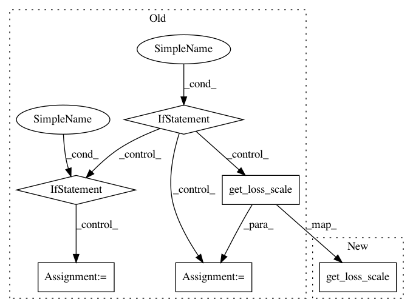

fb35d6bef6eecc640fb865dd2fc73d8fee2a93b6,official/nlp/transformer/transformer_main.py,TransformerTask,__init__,#TransformerTask#Any#,128
Before Change
else:
logging.info("Not using any distribution strategy.")
if params["dtype"] == tf.float16:
// TODO(reedwm): It"s pretty ugly to set the global policy in a constructor
// like this. What if multiple instances of TransformerTask are created?
// We should have a better way in the tf.keras.mixed_precision API of doing
// this.
loss_scale = flags_core.get_loss_scale(
flags_obj, default_for_fp16="dynamic")
policy = tf.compat.v2.keras.mixed_precision.experimental.Policy(
"mixed_float16", loss_scale=loss_scale)
tf.compat.v2.keras.mixed_precision.experimental.set_policy(policy)
elif params["dtype"] == tf.bfloat16:
policy = tf.compat.v2.keras.mixed_precision.experimental.Policy(
"mixed_bfloat16")
tf.compat.v2.keras.mixed_precision.experimental.set_policy(policy)
@property
def use_tpu(self):
if self.distribution_strategy:
return isinstance(self.distribution_strategy,
After Change
performance.set_mixed_precision_policy(
params["dtype"],
flags_core.get_loss_scale(flags_obj, default_for_fp16="dynamic"))
@property
def use_tpu(self):
In pattern: SUPERPATTERN
Frequency: 3
Non-data size: 6
Instances
Project Name: tensorflow/models
Commit Name: fb35d6bef6eecc640fb865dd2fc73d8fee2a93b6
Time: 2020-02-24
Author: hongkuny@google.com
File Name: official/nlp/transformer/transformer_main.py
Class Name: TransformerTask
Method Name: __init__
Project Name: tensorflow/models
Commit Name: fb35d6bef6eecc640fb865dd2fc73d8fee2a93b6
Time: 2020-02-24
Author: hongkuny@google.com
File Name: official/vision/image_classification/resnet_runnable.py
Class Name: ResnetRunnable
Method Name: __init__
Project Name: tensorflow/models
Commit Name: fb35d6bef6eecc640fb865dd2fc73d8fee2a93b6
Time: 2020-02-24
Author: hongkuny@google.com
File Name: official/vision/image_classification/resnet_imagenet_main.py
Class Name:
Method Name: run